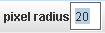
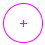

RGB področje
Sled rgb področje meri svetlost podatkov rgb v časovni odvisnosti v okroglem področju na video sliki.
1. Označevanje rgb področja
Z miško (kurzor v obliki križca) označimo center rgb področja. Področje je zarisano kot krog okrog centralnega križca. Postavimo ga na pravi položaj z vlečenjem središča kroga z miško, lahko pa ga izberemo in vnesemo koordinate realnega sveta v polji na orodni vrsticii.
Če je položaj rgb področja sproščen (ne fiksiran), se lahko spreminja od sličice do sličice (glej spodaj). V takem primeru se bo video avtomatsko pomikal naprej in bomo lahko področje neodvisno označevali v vsaki sličici. Čeprav se v vsaki sličici področje avtomatsko izrisuje, lahko še vedno držimo tipko shift in ga s klikom z miško premikamo na klikan položaj.
2. Sprostitev položaja oziroma polmera
Privzeto ima rgb področje fiksiran položaj in fiksiran polmer--to pomeni, da se položaj in polmer ne spreminjata od sličice do sličice. Če želimo, da se ti dve lastnosti lahko spreminjata, moramo ustrezno opcijo razkljukati.
3. Nastavljanje polmera

Izberemo področje in v polje na orodni vrstici vnesemo polmer v pikslih. Obris področja kaže piksle, ki so v povprečju vključeni. Če je polmer področja sproščen, lahko v vsaki sličici nastavimo različen polmer.
